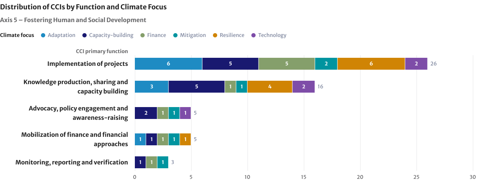
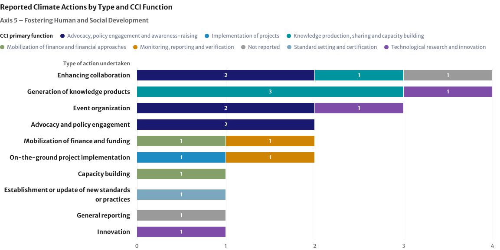
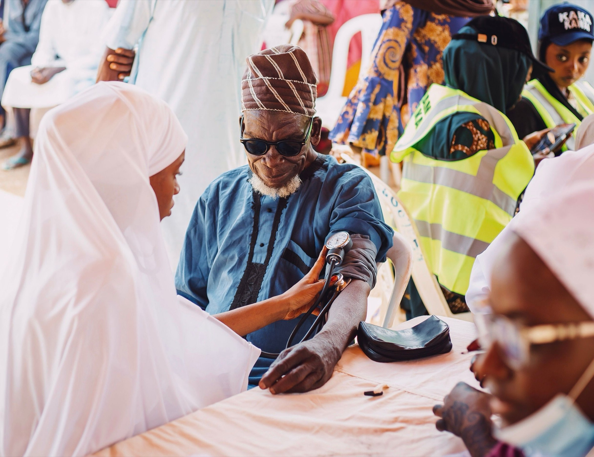

Axis 5 brings together efforts on resilient health systems, the well-being of all people including hunger and poverty eradication, education, capacity-building and job creation, and culture and cultural heritage in climate action.
Key Objectives
Objective 16
Promoting resilient health systems
Objective 17
Reducing the effects of all climate change on eradicating hunger and poverty
Objective 18
Education, capacity-building and job creation to address climate change
Objective 19
Culture, cultural heritage and climate action
Axis 5
At a glance
Global progress
Renewable energy jobs reached 16.6 million in 2024 (up from 16.2 million in 2023)
Extreme poverty fell from 831 million people to 811 million between 2025 and 2026, while the number of people experiencing hunger decreased from ~659 million to ~645 million between 2024 and 2025
The number of developing countries with updated National Adaptation Plans (NAPs) rose from 59 to 81 between 2024 and 2026
Remaining gaps
Women’s share of renewable energy jobs stayed stagnant at 32 per cent between 2024 and 2025
Comparable global indicators remain limited for climate education, adaptation skills and workforce readiness, as well as global monitoring for the protection of cultural heritage, traditional knowledge and cultural practices against climate risks
NAZCA
Eighteen of the 83 Cooperative Climate Initiatives (CCIs) that reported progress to NAZCA under the common reporting framework identify their climate-related goals as contributing to Axis 5. Implementation of projects is the leading CCI function, with a strong focus on ‘adaptation’ and ‘resilience’, followed closely by ‘capacity-building’ and ‘finance’. Enhancing collaboration and Generation of knowledge products are the most frequently reported action types.
Plans to Accelerate Solutions
Total PAS under this axis: 14, covering 4 objectives
Number of PAS sharing progress in the June 26 reporting round: 12
COP 31 priorities
Priority focus for Axis 5 on promoting youth and education and dynamic and resilient health systems.
Axis 5 / Section I
Global Climate Action in 2026 - Insights from the UNFCCC Climate Weeks
The Global Climate Action Agenda (GCAA) presents opportunities to advance and accelerate implementation at scale. It is in that spirit that Climate Weeks in Yeosu, Republic of Korea (held in April) and Baku, Azerbaijan (September), brought together a broad range of stakeholders – including national delegations and non‑Party stakeholders (NPS) – with a strong focus on showcasing practical climate solutions, including those linked to fostering human and social development.
Knowledge holders and practitioners from Indigenous Peoples and local communities, through the work of the Local Communities and Indigenous Peoples Platform, shared stories of their lived climate realities, including intensifying cyclones, unprecedented wildfires, the loss or disappearance of flora and fauna. These new realities adversely affect not only their livelihoods, but also the continuity of their cultural heritage, languages, practices and knowledge systems. At the same time, they shared practices grounded in diverse values, worldviews and intergenerational knowledge systems, demonstrating the important roles of Indigenous Peoples and local communities in the implementation of climate action. Events focusing on leadership of local communities and Indigenous Peoples showcased how resilient solutions are stronger when they incorporate Indigenous knowledge systems and local knowledge systems and empower the local actors.
A dedicated dialogue on implementation of the Belém Gender Action Plan emphasized the importance of strengthening gender-responsive climate finance and improving access to funding for women-led organizations, Indigenous Peoples and local communities. Participants shared practical solutions, including available funding windows, alternative and innovative finance mechanisms aimed at expanding inclusive access to climate finance, strengthening locally led climate action and ensuring equitable outcomes.
Events dedicated to youth engagement and leadership of Indigenous Peoples and local communities reinforced that those most affected by climate change must have a voice in solutions. Local success stories – like Nepal’s community forestry programme – illustrated how empowering communities can deliver big wins for both climate and livelihoods.
Finally, sessions on health, water and forests stressed that tackling climate change can go hand-in-hand with better public health, water security, and sustainable livelihoods through integrated approaches such as climate-resilient health systems, watershed restoration and community forestry programs.
The Implementation Forums organized during CW3 and CW4 were focused on supporting efforts to accelerate climate action by creating a dedicated space where Parties and NPS could meet on equal footing to exchange practical solutions, align priorities, and collectively discuss how to move from ambition to implementation at scale. Under Axis 5, one of the lead high-impact, scalable solutions emerging from the Implementation Labs and Impact Dialogues is described below:
CW3
Climate‑Resilient Health Systems and Extreme Heat Preparedness
Bayer presented a concrete model for integrating climate risk into public health systems, with a particular focus on extreme heat, maternal health, kidney health and climate‑driven disease risk. The work combines participatory research, local evidence generation, health‑system intelligence and workforce capacity‑building, in partnership with WHO Foundation and UNFPA.
This solution shows how climate adaptation can directly protect lives while strengthening national health systems.
Key implementation value
Strong link between climate adaptation and lived human impacts
Evidence‑based and rights‑focused approach
Scalable through national health systems
Axis 5 / Section II
Progress on global socio-economic indicators (GSIs)
Of the 10 indicators under this axis, 5 show progress, 1 shows no progress and 4 have insufficient data. There are 4 new indicators this year.
Indicators at a glance
5 of 10
Indicators show progress
1 of 10
Indicator shows no progress
4 of 10
Indicators have insufficient data
4 new
Indicators added this year
Across Axis 5, global indicators point to progress in poverty reduction, food security, disaster preparedness and green employment, but significant gaps remain in quantifying how these gains translate into greater climate resilience. While adaptation planning and early warning coverage are expanding, the implementation of climate-resilient health systems, adaptive social protection, education and cultural heritage protection remains insufficiently captured by global datasets. These gaps limit the ability to assess whether the most vulnerable populations are becoming better protected against escalating climate risks.
Under Objective 16, comparable global evidence remains limited on climate-resilient healthcare facilities, implementation of Health National Adaptation Plans and the capacity of health systems to withstand climate shocks.
Under Objective 17, several global indicators show encouraging trends. Extreme poverty fell from 831 million people in 2025 to 811 million in 2026, a 2.4 per cent reduction, and people experiencing hunger decreased from 673 million in 2024 to 645 million in 2025. Disaster related deaths and missing persons fell by 65 per cent from 2.12 per 100,000 people (2005–2014) to 0.75 (2016–2025), and evidence shows that early warning systems and preparedness save lives and improve disaster risk governance. Developing countries with updated National Adaptation Plans (NAPs) rose from 59 in 2024 to 81 in 2026, signalling growing institutional readiness. Nevertheless, these indicators do not yet capture the extent to which adaptation plans are financed and implemented, or whether social protection systems are effectively reducing climate vulnerability at community level.
Under Objective 18, the constant growth in renewable energy jobs demonstrates the expanding employment opportunities associated with the energy transition. However, women’s share has stayed stagnant at 32 per cent since 2019, highlighting persistent inequalities in access to these opportunities. Climate hazards, which trigger disruptions to education and trigger a compounding risk cycle that heightens long-term vulnerability disrupted the schooling of more than 171 million students globally in 2025, about one in 10. Comparable global indicators remain limited for climate education, adaptation skills and workforce readiness, constraining assessments of whether education and labour systems are equipping people for a climate-resilient and inclusive transition.
Under Objective 19, global monitoring remains underdeveloped, particularly for the protection of cultural heritage, traditional knowledge and cultural practices against climate risks. The adoption of the Belém Adaptation Indicators at COP 30 provides an important foundation for strengthening Global Goal on Adaptation (GGA)-aligned monitoring, including the integration of cultural heritage into adaptation planning and implementation. However, comparable global data on the implementation and effectiveness of cultural heritage adaptation measures remain limited.
Axis 5 / Section III
Progress of plans and initiatives
Key trends from NAZCA, highlights of initiative self-tracking progress, case studies and the Plans to Accelerate Solutions (PAS) under Axis 5.

Implementation of projects is the leading CCI function under this axis, followed by Knowledge production, sharing and capacity-building. Axis 5 records the highest count of CCIs reporting Implementation of projects across all six axes, followed by Axis 3. This highlights the prominence of on-the-ground implementation in both human and social development and agri-food systems. Advocacy, policy engagement and awareness-raising, Mobilization of finance and financial approaches, and Monitoring, reporting and verification are reported less frequently.

Enhancing collaboration and Generation of knowledge products are the most frequently reported action types, followed by Event organization. Advocacy and policy engagement, Mobilization of finance and funding and On-the-ground project implementation also appear. Overall counts are relatively small, so the chart is best read as an indication of the types of work reported rather than a basis for broad conclusions.
The information in the highlights of CCI self-reported action was directly submitted by CCIs and, therefore, the views expressed do not necessarily reflect the views of the secretariat.
Plans to Accelerate Solutions
Under Axis 5, 14 Plans to Accelerate Solutions (PAS) cover all four objectives. Twelve PAS reported back in the June 2026 round.
14 PAS
Across all four key objectives
150
Planned actions, 52% building on existing work
12
PAS reported in June 2026
List of activation groups and PAS
Axis 5 / Section IV
COP 31 Action Agenda

Promoting young people as architects of climate solutions, not just inheritors of climate risks though Youth and Education and building Dynamic and Resilient Health Systems for the future
Placing people at the center of climate action by strengthening health, education, skills, livelihoods, and social resilience alongside physical infrastructure is at the core of the work carried out under Axis 5. As such, a people-centred approach is key to translating climate ambition into concrete improvements that protect wellbeing, reduce inequalities, and empower vulnerable communities.
Prioritizing the youth and education agenda means scaling climate literacy, resilience skills, circular economy principles, and intergenerational leadership through formal and informal education systems.
The people-centered dimension of the Zero Waste Package can also support education and skills development related to circular economy and zero waste solutions, while promoting just transition pathways for workers, waste pickers, local entrepreneurs, communities and consumers as key actors of implementation.
Building on existing initiatives and PAS, the focus on resilient health aims to accelerate dynamic and climate-resilient health systems through heat-health action plans, climate-informed surveillance systems, resilient public health services, and locally led resilience delivery, generating co-benefits across food systems, water security, urban resilience, and social protection.
Axis 5 / Section V
Global Climate Action at COP 31
A summary of Global Climate Action [solutions] under Axis 5 showcased during COP 31 will be made available here after the Conference. The GCA programme at COP 31 is available here: LINK